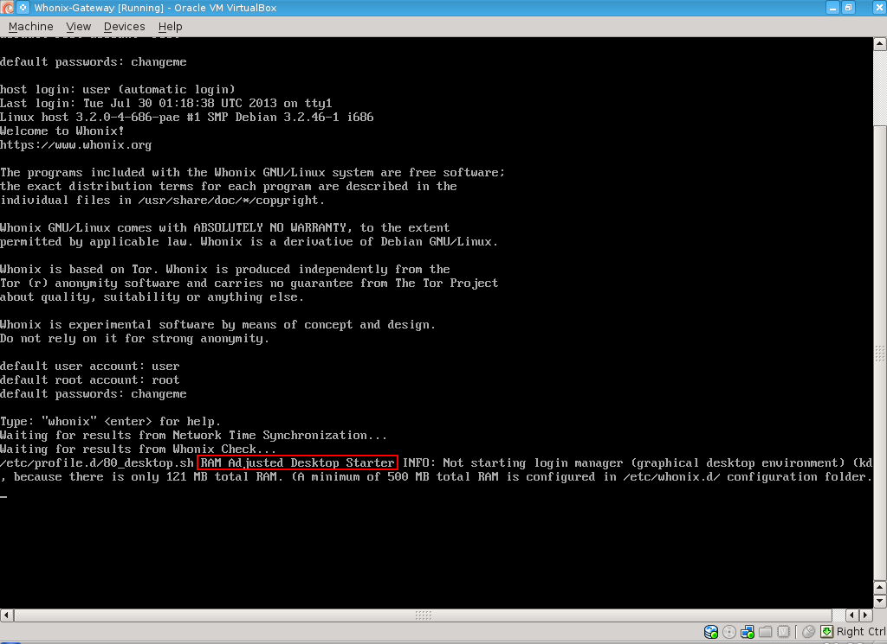

We believe security software like Whonix needs to remain Open Source and independent. Would you help sustain and grow the project? Learn more about our 14 year success story and maybe DONATE!
Stay
TunedDocumentationPost
Install AdvicePrevious
page: Stay TunedIndex page:
DocumentationNext page: Post Install
Advice
Platform-specific Desktop Tips
Whonix Platform-specific Desktop Tips and Tricks, RAM Adjusted Desktop Starter, Virtual Console, Full-Screen
All Platforms
Disable Terminal Emulator Banner
The following greeting banner appears when a terminal shell
bash prompt is opened.
Welcome to Whonix! https://www.whonix.org
Whonix Copyright (C) 2012 - 2026 ENCRYPTED SUPPORT LLC Whonix is Freedom Software, and you are welcome to redistribute it under certain conditions; type "whonix-license" for details. Whonix is a compilation of software packages, each under its own copyright and license. The exact license terms for each program are described in the individual files in /usr/share/doc/*/copyright.
Whonix GNU/Linux comes with ABSOLUTELY NO WARRANTY, to the extent permitted by applicable law; for details type "whonix-disclaimer" .
Whonix is a derivative of Debian GNU/Linux and based on Tor.
Whonix is produced independently from the Tor (r) anonymity software and carries no guarantee from The Tor Project about quality, suitability or anything else.
Whonix is a research project.
default user account: user default password: No password required. (Passwordless login.)
Type: "whonix" for help.
To disable the banner, follow these steps.
1. If user-sysmaint-split is installed,
boot into PERSISTENT Mode | SYSMAINT Session | system maintenance tasks.
2. Open a terminal.
Select your platform.
Non-Qubes-Whonix USER Session
If you are using a graphical Whonix with LXQt, complete the following steps.
Start menu → System Tools →
QTerminal
Non-Qubes-Whonix SYSMAINT Session
In the System Maintenance Panel, under the
Misc section,
click Open Terminal.Qubes-Whonix
If you are using Qubes-Whonix, complete the following steps.
Qubes App Launcher (blue/grey "Q") →
Whonix-Workstation™ App Qube (commonly named anon-whonix)
→ QTerminal
3. Run the following command.
sudo chmod -x /etc/update-motd.d/30_dist-base-files
4. Done.
The process is now complete.
See also: Disable Virtual Console Banner.
Shut Down Whonix
To shut down Whonix, open a terminal and run.
sudo poweroff
Alternatively, use the menu option:
- Non-Qubes-Whonix:
- In user sessions:
Start Menu→Log Out→Shut Down - In sysmaint sessions: click the
Shut Downbutton in the System Maintenance Panel
- In user sessions:
- Qubes-Whonix™:
Blue Q button→Qubes Tools→Qubes Manager→sys-whonix→Shutdown
Virtual Consoles
On the Host
Virtual consoles is a feature inherited from Debian GNU/Linux which is unfamiliar to many users. The following keyboard shortcuts activate the Debian (not Whonix) feature:
- Text console: Press
Alt + Ctrl + F1- Additional text consoles: Press
Alt + Ctrl + F2orF3and so on. Try these in caseF1is not functional.
- Additional text consoles: Press
- Graphical console: Press
Alt + Ctrl + F7
See also Protection against Physical Attacks, Virtual Consoles.
Virtual Machines
Platform |
Steps |
|---|---|
KVM |
The desired virtual console key shortcut can be selected under
the |
Qubes dom0 |
Qubes dom0 inherited the same feature
( |
Qubes VMs |
In order to access VMs in dom0, run: [1]
See also add Qubes host key to allow switching virtual console (ctrl + alt + F1) or SysRq for HVM. |
VirtualBox |
The VirtualBox default is
|
Due to technical limitations, an easier to understand presentation
like Whonix username login: or something similar cannot be
shown. [3]
- Enter your username (this is most likely
user) and press . - Enter your password and press .

- Default username: user
- Default password: No password required. (Passwordless login.) [4]
Banner Explanation
In the Whonix case, the virtual console will show
host login:. This can be confusing and has nothing to do
with the actual host that Whonix is running on. The string
host is retrieved from file /etc/hostname
which for privacy reasons is set to host in Whonix.
Therefore do not enter your host (the system Whonix is running
on) username or host password.
Due to technical limitations, an easier to understand presentation
like Whonix username login: or something similar cannot be
shown. [5]
Login Instructions
- Note the Banner Explanation.
- Enter your username (this is most likely
user) and press . - Enter your password and press .

- Default username: user
- Default password: No password required. (Passwordless login.) [6]
Disable Virtual Console Banner
This process is similar to Disable Terminal Emulator Banner.
1. If user-sysmaint-split is installed,
boot into PERSISTENT Mode | SYSMAINT Session | system maintenance tasks.
2. Open a virtual console.
3. Move the /etc/issue.whonix file out
of the way.
sudo mv /etc/issue.whonix /etc/issue.whonix.bak
4. Create an empty file in its place.
sudo touch /etc/issue.whonix
5. (Optional) Divert
/usr/lib/issue.d/20_security-misc.issue to prevent the
unauthorized access warning from being displayed either.
sudo dpkg-divert --divert /usr/lib/issue.d/20_security-misc.issue.bak --rename /usr/lib/issue.d/20_security-misc.issue
6. Done
The procedure is complete.
Non-Qubes-Whonix
Disable Autologin
Not very useful inside VMs, see also Login Screen.
Autologin is enabled by default in the login manager by Whonix.
See Login#Configuring_GUI_Autologin for detailed instructions on disabling autologin.
RAM Adjusted Desktop Starter

RAM Adjusted Desktop Starter will not start the desktop environment. The terminal-based Whonix-Gateway™ can be used instead.
By default, Whonix-Gateway VMs are configured with 1280 MB of virtual RAM. This can be reduced on systems with limited available resources.
- If total VM-accessible RAM is more than 480 MB, the default graphical desktop environment (DE) (LXQt) is started. (Some RAM will be reserved for the virtual hardware, so in practice one must assign more than 512 MB RAM for the desktop to start. 768 MB RAM is the minimum recommended.)
- If total VM-accessible RAM is 480 MB or less, the DE is not started.
This feature is useful for users with low RAM, as Whonix-Gateway can still function with as little as 512 MB of RAM in a CLI-only environment.
If configuration or troubleshooting is needed, assigning 768 MB of
RAM will automatically boot into the graphical desktop environment.
Additional settings are available in the /etc/rads.d folder
to configure this feature: more RAM can be allocated (while still opting
not to start a desktop environment), different display managers can be
used, and so on. See the /etc/rads.d/30_default.conf file
for configuration examples.
For more information, see RAM Adjusted Desktop Starter.
Disable the Graphical Desktop Environment
This is for advanced users only.
To stop the graphical desktop environment.
sudo systemctl stop greetd
To disable automatic start at boot of the graphical desktop environment.
sudo systemctl disable greetd
To restart the graphical desktop environment.
sudo systemctl start greetd
To re-enable automatic start at boot of the graphical desktop environment.
sudo systemctl enable greetd
Do not attempt to uninstall the graphical desktop environment. This would require removal of Whonix meta packages, and Whonix meta packages are not designed to be removed. If you want a Whonix server installation, download the Whonix CLI version or build it from source code. See VirtualBox#CLI and KVM#CLI.
related: Using Whonix with Other Desktop Environments such as GNOME, KDE, LXDE, MATE, ...)
Use Full-screen Mode
It is recommended to work in full-screen mode; this feature is also
inherited from VirtualBox and
KVM. When full-screen mode is
enabled, the Whonix virtual display will automatically increase its
resolution to the host system's resolution. See Screen and resize.
VirtualBox
To activate and deactivate full-screen mode, press the VirtualBox
Host Key + F. The current Host Key is visible in the bottom right corner
of VirtualBox. The VirtualBox default is
Right Ctrl + F.
Host key can be changed using VirtualBox →
Global Settings → Input →
Host Key.
KVM
To activate full-screen mode when using virt-manager, open the VM
window, then click View → Fullscreen. To
deactivate full-screen mode, move the mouse pointer to the top middle of
the screen, and click the Leave fullscreen button.
LXQt Scaling
Default Home Folder Configuration Files Reset
Before following these instructions to wipe the whole LXQt settings folder and restore defaults, it is recommended to backup existing LXQt settings.
1. Logout from and stop LXQt by clicking
Application Menu → Power button →
Logout → Yes.
2. Open a virtual console.
3. Delete folder ~/.config/lxqt.
safe-rm -rf ~/.config/lxqt
4. Delete folder
~/.config/pcmanfm-qt.
safe-rm -rf ~/.config/pcmanfm-qt
5. Delete folder
~/.config/qterminal.org.
safe-rm -rf ~/.config/qterminal.org
6. Switch back to the login screen by pressing
Ctrl + Alt + F7, then log in. LXQt will automatically
regenerate its settings files as needed.
7. Done.
The process has been completed.
Qubes-Whonix
Avoid VM Full Screen Mode
It is not recommended to allow Qubes-Whonix or other VMs to completely "own" the full screen. Overriding Qubes' GUI virtualization daemon restrictions means the colored decorations drawn by each VM window will not be visible. In this case, a malicious application might not actually release the full screen (while it appears normal), or the full desktop may be emulated so users are tricked into entering sensitive information inside false "trusted" domains. [7]
See Also
Footnotes
- ↑ This is not a real virtual console, but using login.
- ↑ Inside VirtualBox, the
Alt + Ctrlkeys are already registered by the host operating system. Host key can be changed usingVirtualBox→Global Settings→Input→Host Key. - ↑ The
loginprogram unfortunately does not provide this option. - ↑
 Rationale for Change from Default Password changeme to Empty Default
Password
Rationale for Change from Default Password changeme to Empty Default
Password - ↑ The
loginprogram unfortunately does not provide this option. - ↑
Rationale for Change from Default Password changeme to Empty Default
Password
- ↑ https://www.qubes-os.org/doc/how-to-enter-fullscreen-mode/
Categories: Documentation